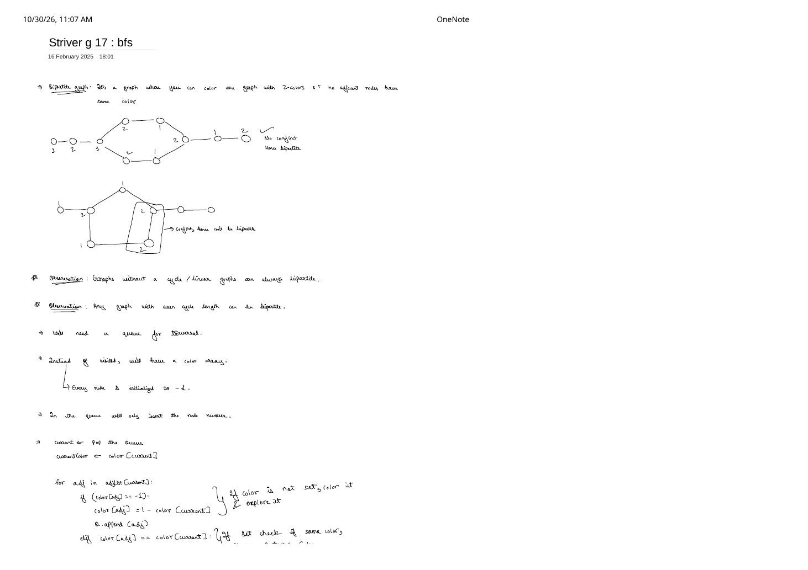
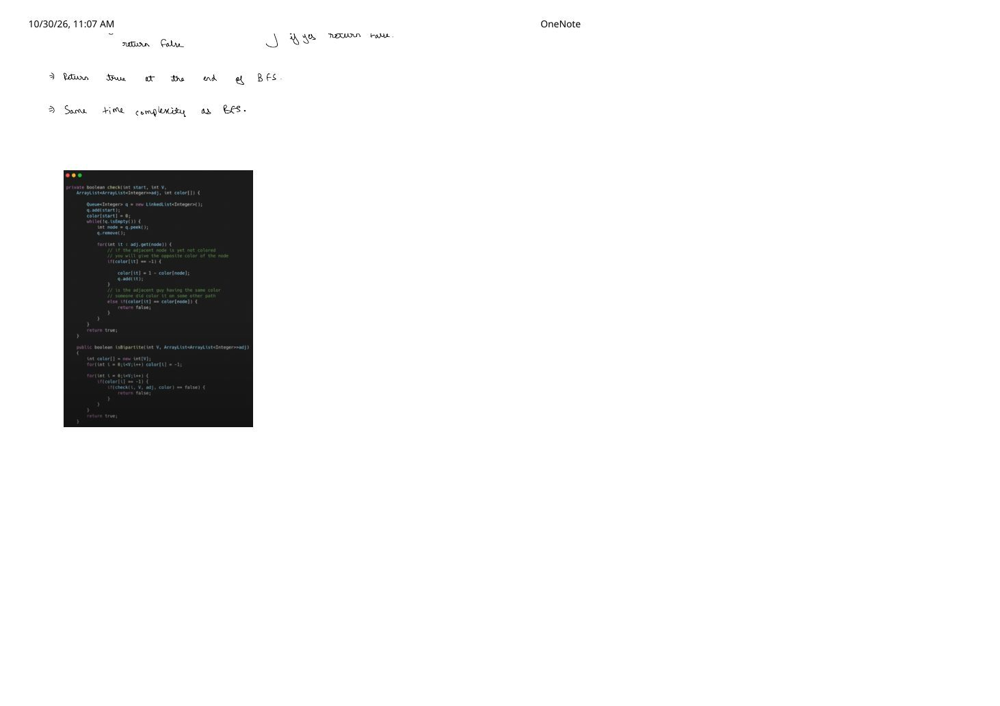
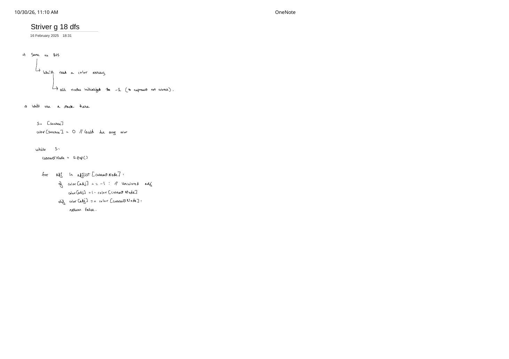

Bipartite Graphs: 2-Coloring, The Odd-Cycle Theorem & BFS / DFS Checks
Expanded from handwritten competitive coding study notes (01_Striver_g_17_bfs.pdf & 02_Striver_g_18_dfs.pdf) · View original handwritten pages
Many disguises in competitive programming—"split $N$ people with dislike pairs into two rooms" (LC 886), "test whether a graph's vertices partition into two independent sets" (LC 785), or "detect whether a graph has an odd-length cycle"—are all the exact same question: is the graph bipartite? Both BFS and DFS answer this in $\mathcal{O}(V + 2E)$ time by replacing the standard boolean visited array with a 3-state color array initialized to -1.
1. 2-Coloring Definition & The Odd-Length Cycle Theorem
Bipartite Graph (2-Colorability)
A graph $G = (V, E)$ is bipartite if every vertex can be assigned one of two colors—say 0 and 1 (or colors 1 and 2 in the handwritten diagrams)—such that no two adjacent vertices share the same color:
Let us trace the two exact graphs sketched on page 1 of 01_Striver_g_17_bfs.pdf to see why cycle parity completely governs bipartiteness:
01_Striver_g_17_bfs.pdf (mapping note labels $\{1, 2\} \leftrightarrow \{0, 1\}$): the 6-cycle synchronizes parity where paths meet, whereas the 5-cycle forces two adjacent vertices into color 1.Three Structural Observations (Starred in the Notes)
- Linear / Acyclic graphs (including all trees and forests) are ALWAYS bipartite: Coloring each node by
depth % 2from an arbitrary root per component never encounters a back/cross edge that could conflict. - Any graph whose cycles all have EVEN length is ALWAYS bipartite: Walking $2k$ edges alternates colors $2k$ times, returning to the starting vertex's original color.
- König's Odd-Cycle Theorem: A graph is bipartite if and only if it contains no odd-length cycle. Along a cycle $v_0 - v_1 - \dots - v_{2k} - v_0$ of odd length $2k + 1$, alternating colors forces $\text{color}[v_{2k}] = \text{color}[v_0]$ despite edge $(v_{2k}, v_0) \in E$.
2. Approach 1: Bipartite Check via Breadth-First Search (Striver G-17)
Instead of maintaining a boolean visited[] array, we allocate a single integer array color[V] initialized to -1 (meaning uncolored / unvisited):
- Because the graph may contain multiple disconnected components, we wrap BFS inside an outer loop
for (int i = 0; i < V; ++i)and start a fresh BFS from every vertex still holdingcolor[i] == -1. - Assign
color[start] = 0and pushstartinto FIFO queue $Q$ (only the vertex ID is needed—no parent tracking required!). - When popping
curr, inspect every neighboradj:- If
color[adj] == -1: assign opposite colorcolor[adj] = 1 - color[curr]and enqueueadj. - Else if
color[adj] == color[curr]: another path already coloredadjwith the same color (closing an odd cycle!)—immediatelyreturn false.
- If
// Approach 1: Bipartite Graph Check via BFS (LeetCode 785 / Striver G-17) — C++
class Solution {
bool bfsCheck(int start, const vector<vector<int>>& adj, vector<int>& color) {
queue<int> q;
q.push(start);
color[start] = 0;
while (!q.empty()) {
int curr = q.front();
q.pop();
for (int nbr : adj[curr]) {
if (color[nbr] == -1) {
// Uncolored neighbor: assign opposite color (0 -> 1, 1 -> 0) & enqueue
color[nbr] = 1 - color[curr];
q.push(nbr);
} else if (color[nbr] == color[curr]) {
// Adjacent node already has the same color -> odd cycle conflict!
return false;
}
}
}
return true;
}
public:
bool isBipartite(vector<vector<int>>& graph) {
int V = graph.size();
vector<int> color(V, -1);
// Must check every connected component!
for (int i = 0; i < V; ++i) {
if (color[i] == -1) {
if (!bfsCheck(i, graph, color)) return false;
}
}
return true;
}
};3. Approach 2: Bipartite Check via Depth-First Search (Striver G-18)
Replacing the FIFO queue with DFS (either via clean recursion or an explicit stack $S$ as written in 02_Striver_g_18_dfs.pdf) preserves the exact same color[V] logic. As DFS plunges along a path, it alternates col and 1 - col (!col). If it hits a previously colored neighbor with color[nbr] == color[curr], it short-circuits false all the way up the call stack.
Subtle Bug to Watch Out For in Iterative Stack DFS
In the quick handwritten stack sketch on 02_Striver_g_18_dfs.pdf, under if color[adj] == -1: we wrote color[adj] = 1 - color[currentNode]—make sure you also push adj onto stack $S$ (S.append(adj)) right after coloring it, otherwise traversal halts after depth $1$!
// Approach 2A: Recursive DFS Bipartite Check (Striver G-18) — C++
class Solution {
bool dfsCheck(int node, int col, const vector<vector<int>>& adj, vector<int>& color) {
color[node] = col;
for (int nbr : adj[node]) {
if (color[nbr] == -1) {
if (!dfsCheck(nbr, 1 - col, adj, color)) return false;
} else if (color[nbr] == col) {
return false; // Same color across edge (node, nbr)
}
}
return true;
}
public:
bool isBipartite(vector<vector<int>>& graph) {
int V = graph.size();
vector<int> color(V, -1);
for (int i = 0; i < V; ++i) {
if (color[i] == -1) {
if (!dfsCheck(i, 0, graph, color)) return false;
}
}
return true;
}
};# Approach 2B: Iterative Stack DFS Bipartite Check (matching 02_Striver_g_18_dfs.pdf)
class Solution:
def isBipartite(self, adjList: List[List[int]]) -> bool:
V = len(adjList)
color = [-1] * V # -1 represents uncolored
for source in range(V):
if color[source] != -1:
continue
S = [source]
color[source] = 0 # Starting color of component (0 or 1 both work)
while S:
currentNode = S.pop()
for adj in adjList[currentNode]:
if color[adj] == -1:
color[adj] = 1 - color[currentNode]
S.append(adj) # Push newly colored neighbor to explore its edges!
elif color[adj] == color[currentNode]:
return False
return True4. Complexity & BFS vs. DFS Comparison
| Method | Time Complexity | Space Complexity | Practical Notes |
|---|---|---|---|
| BFS 2-Coloring | $\mathcal{O}(V + 2E)$ | $\mathcal{O}(V)$ (color + queue) |
Colors depth % 2 layer-by-layer; immune to recursion stack overflow on $V = 10^5$ path graphs. |
| Recursive DFS 2-Coloring | $\mathcal{O}(V + 2E)$ | $\mathcal{O}(V)$ (color + call stack) |
Shortest to type in contests (~15 lines); use iterative stack DFS if $V \ge 10^5$ in Python. |
From the Handwritten Notes
Expand the original handwritten pages below to inspect the exact derivations, dry runs, and annotations:
View original note — Striver G-17: Bipartite Graph Definition, Cycle Parity & BFS Logic (Page 1)


color[] BFS pseudocode.View original note — Striver G-17: Bipartite BFS Multi-Component Code & Complexity (Page 2)


isBipartite implementation.View original note — Striver G-18: Bipartite Graph Check via Stack DFS (Page 1)


-1-initialized color array from queue-based BFS to stack-based DFS.